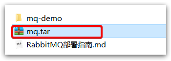

RabbitMQ搭建指南
1.单机部署
我们在Centos7虚拟机中使用Docker来安装。
1.1.下载镜像
方式一：在线拉取
1 | docker pull rabbitmq:3-management |
方式二：从本地加载
在课前资料已经提供了镜像包：

上传到虚拟机中后，使用命令加载镜像即可：
1 | docker load -i mq.tar |
1.2.安装MQ
执行下面的命令来运行MQ容器：
1 | docker run \ |
2.集群部署
接下来，我们看看如何安装RabbitMQ的集群。
2.1.集群分类
在RabbitMQ的官方文档中，讲述了两种集群的配置方式：
- 普通模式：普通模式集群不进行数据同步，每个MQ都有自己的队列、数据信息（其它元数据信息如交换机等会同步）。例如我们有2个MQ：mq1，和mq2，如果你的消息在mq1，而你连接到了mq2，那么mq2会去mq1拉取消息，然后返回给你。如果mq1宕机，消息就会丢失。
- 镜像模式：与普通模式不同，队列会在各个mq的镜像节点之间同步，因此你连接到任何一个镜像节点，均可获取到消息。而且如果一个节点宕机，并不会导致数据丢失。不过，这种方式增加了数据同步的带宽消耗。
我们先来看普通模式集群。
2.2.设置网络
首先，我们需要让3台MQ互相知道对方的存在。
分别在3台机器中，设置 /etc/hosts文件，添加如下内容：
1 | 192.168.150.101 mq1 |
并在每台机器上测试，是否可以ping通对方：
本博客所有文章除特别声明外，均采用 CC BY-NC-SA 4.0 许可协议。转载请注明来自 shallow shadow！